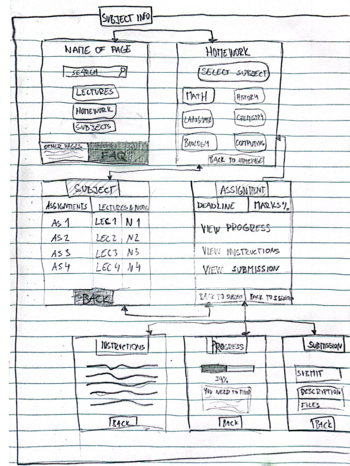

Wireframes
User task
The user task I'm designing is getting info about assignment.
User flow

Wireframes
Middle left screen is the key screen

Other keyscreen designs, the most successful will be the one used in the wireframe

Reviewed by Kevin Michael